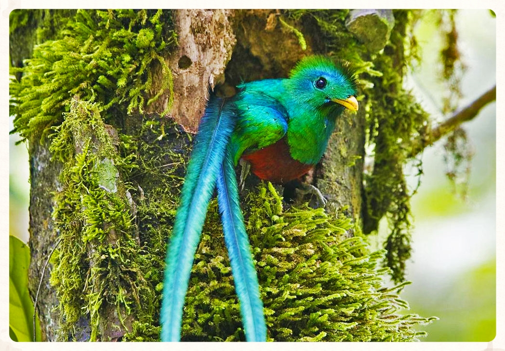

El Biotopo cuenta con más de 50 especies de árboles, hasta de 40 metros de altura, incluyendo algunos bastante antiguos de 450 años de edad. Sus montañas funcionan como parte aguas para las corrientes fluviales que drenan a las vertientes del Golfo y del Caribe. Entre las especies de flora más sobresalientes están: pino, encino, ciprés, caucho, eucalipto, chipe o shut (helechos gigantes), líquenes, musgos, orquídeas, bromelias, algas y otras plantas aéreas y epífitas. En lo que a fauna se refiere, se han identificado 58 especies, de las cuales dos son residentes en verano.

Entre otras las especies existentes son: ardillas, conejos silvestres, zorros, zaraguates, monos, culebras venenosas y no venenosas, arbóreas y terrestres, salamandras, etc. Un lugar muy especial lo ocupa el quetzal, ave nacional de Guatemala y es uno de los pocos lugares donde se puede observar, preferentemente muy temprano en la mañana. Dentro del área existen dos senderos de reconocimiento de la reserva: - Sendero corto (Los Helechos): 2000 metros de recorrido aprox. y puede realizarse en 45 min. - Sendero largo (Los Musgos): 4000 metros de recorrido aprox. y puede completarse en 3 horas.
Las actividades que realizan los visitantes consisten en caminatas de observación de flora y fauna y eventualmente un baño en pozas naturales de agua fría. La caminata por los senderos es altamente educativa y también se puede aprender lo relativo al ciclo del agua. La reserva cuenta con las siguientes instalaciones y equipamiento, salón de usos múltiples, área para acampar pequeña área para estacionamiento, tienda, sanitarios, cafetería, ranchos con mesas y parrillas y albergue para 20 personas. EL Biotopo se encuentra a 165 kilómetros de ciudad de Guatemala, sobre la carretera CA-14, que conduce a Cobán. El área está abierta al público de 6:00 a 16:00 horas.